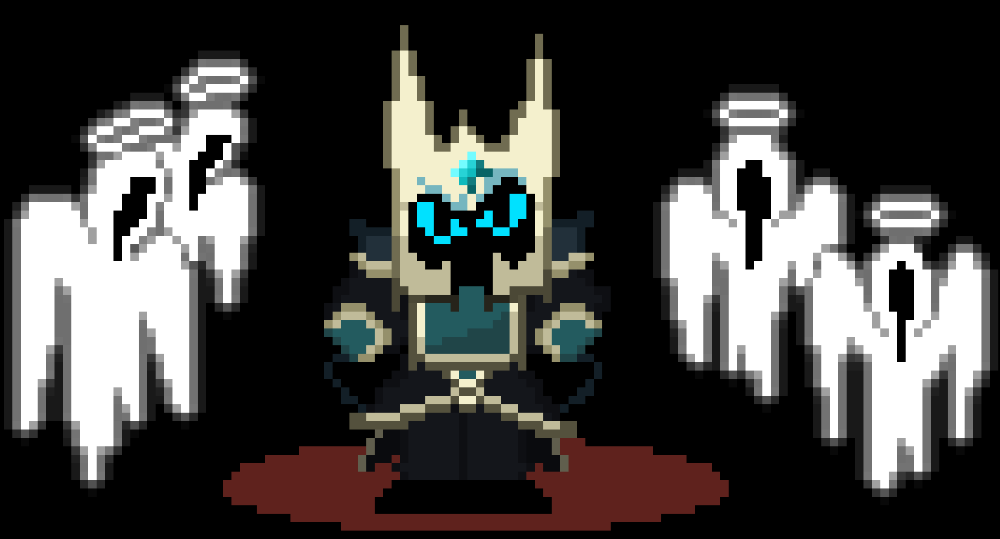
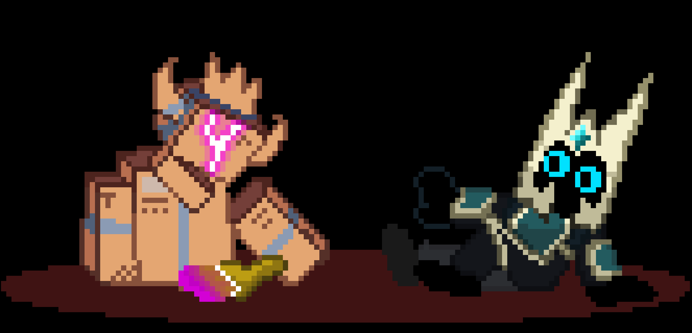
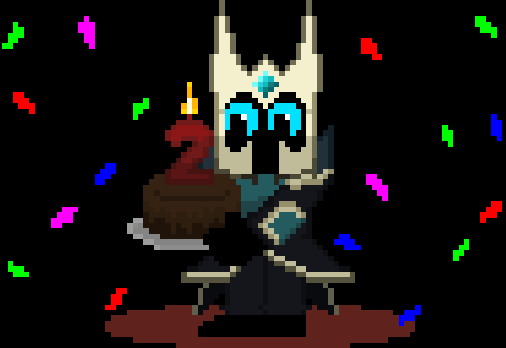
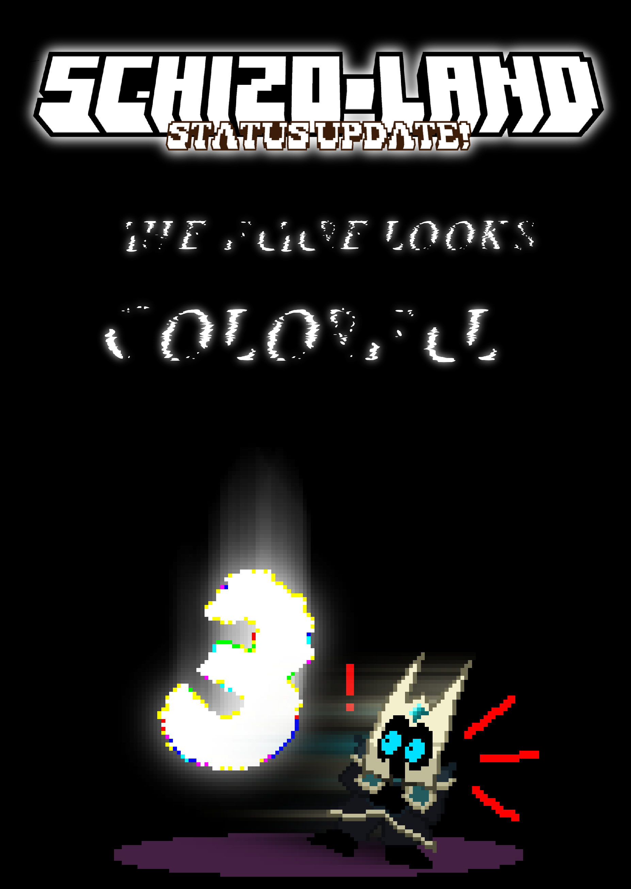

Verano 2025

CAN SOMEONE TELL ME
WHAT IS A COLOR KING?
Oh, verano de 1999... Dulce verano de 1999... Quiero decir...
Vacaciones de verano! O de invierno, depende del país.
Ya presente en la anterior Status Update que eran las Status Updates. Así que no voy a repetirme.
En esta, me verán comentando el fin del epílogo, un festejo por un cumpleaños, y se preguntarán.
¿QUE ES UN REY DE COLORES?

Epílogo
El epílogo de Schizo-Land 2.
Salió ya completo en el canal de Prólogo-Epílogo.
Revelando el final que escogieron ustedes por medio de darle las espadas a La Muerte.
Con esto concluye básicamente todo el contenido involucrado a Schizo-Land 2.
Lo que siga ya se desprende de los discípulos o viajes temporales.
Lo único que queda de aquellos que adoran al vacío...
Es una pequeña espada. 🗡️

Aniversario!
En otro tema, y antes de llegar a hablar sobre las noticias de la tercera entrega...
Ya se cumplen 2 años desde la segunda! (Gabi sigue con el mismo fondo de WhatsApp desde hace 2 años...)
Schizo-Land 2 salió el 2 de diciembre de 2023, mientras que la primera entrega está cerca de cumplir los 3 años!
Pues salió un 22 de diciembre de 2022 sino me falla la memoria.

Schizo-Land 3
El futuro se ve colorido! Como dije en la anterior status update. Schizo-Land 3 había quedado sin tema, ya que por una decisión creativa, pasé el tema original de la tercer entrega a la cuarta.
Pero entre esta actualización y la anterior, nació una idea. Una colorida.
La lástima es claro, que no hemos salido de hiato, así que van a tener que seguir esperando para ver el color. De hecho, originalmente la tercer entrega iba a empezar su desarrollo desde enero de 2026.
El villano y trama están hechos, solo falta desarrollarlos más. Quizás empiece más tarde de lo planeado, pero mientras trabaje en las ideas, parece que la tercera entrega será la más pulida de todas!
En cuanto a jugabilidad, solo voy a decir que me quiero inspirar de juegos como Silksong y Deltarune, juegos que me marcaron este año, juegos en los que cada rincón tiene algo!
Quiero algo así para Schizo-Land.